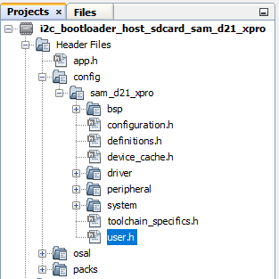
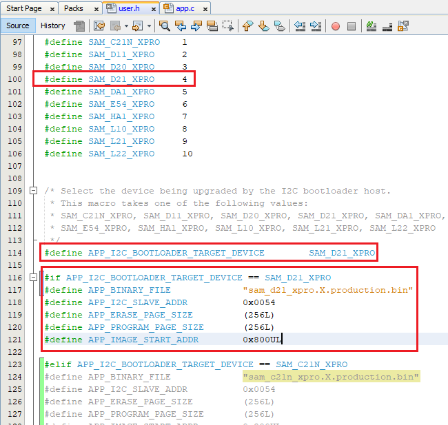
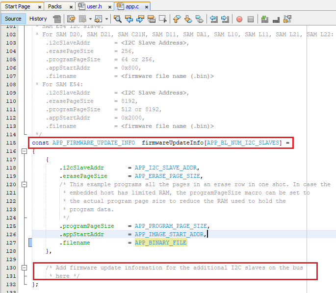

Configuring the SDCARD Host applications
Downloading the application
To clone or download this application from Github,go to the main page of this repository and then click Clone button to clone this repo or download as zip file. This content can also be download using content manager by following these instructions
Path of the SDCARD host applications within the repository is apps/i2c_bootloader/
Configuring the SDCARD Host application
Follow below steps only when Host development kit is different than Target Development Kit
-
Open the host_app_sdcard/firmware/*.X project in MPLABX IDE
-
Open the “user.h” file as shown below:

-
In the “user.h” file specify the Bootloader Target Device used using the predefined macros #define APP_I2C_BOOTLOADER_TARGET_DEVICE SAM_D21_XPRO

-
Navigate to the #if block for the specified Bootloader Target Device and verify the below settings are as expected.
- APP_BINARY_FILE: Name of the Application binary copied to the SDCARD
- APP_I2C_SLAVE_ADDR: I2C slave address
- APP_ERASE_PAGE_SIZE: Erase page size of the target (target = MCU being programmed)
- APP_PROGRAM_PAGE_SIZE: Program page size of the target (target = MCU being programmed).
- The macro can either be set to the program page size or can be set to the size of the erase page size of the target.
- In the demo example, the macro is set equal to the size of the erase page.
- On embedded host where RAM is limited, the macro may be set to the actual program page size to reduce the RAM used to hold the program data.
- For example, for SAM D20, the macro can be set either to 64 (program page size) or 256 (erase page size)
- APP_IMAGE_START_ADDR: User application start address (This value should be same as the application start address specified in Application Configurations steps).
- If the bootloader itself is being upgraded then the APP_IMAGE_START_ADDR must be set to 0x00 (start of bootloader)
- Ensure that the bootloader and application are also configured with the same value of user application start address
Follow below steps only when multiple Target development kit are to be programmed using the same Host development kit
-
Open the host application source file
-
The APP_BL_NUM_I2C_SLAVES must be set equal to the number of slaves being programmed on the I2C bus
-
Specify the following details in the firmwareUpdateInfo data structure for other slaves on the bus:

- i2cSlaveAddr: Specify the I2C slave address
- erasePageSize: Specify the erase page size of the target (target = MCU being programmed)
- programPageSize: Specify the program page size of the target (target = MCU being programmed).
- It can either be set to the program page size or can be set to the size of the erase page size of the target.
- In the demo example, it is set equal to the size of the erase page.
- On embedded host where RAM is limited, it may be set to the actual program page size to reduce the RAM used to hold the program data.
- For example, for SAM D20, the programPageSize can be set either to 64 (program page size) or 256 (erase page size).
- appStartAddr: Specify the user application start address (This value should be same as the application start address specified in Application configuration).
- If the bootloader itself is being upgraded then the appStartAddr must be set to 0x00 (start of the bootloader).
- Also, ensure that the bootloader is also configured with the same value of application start address.
- filename: Specify the filename of the application binary